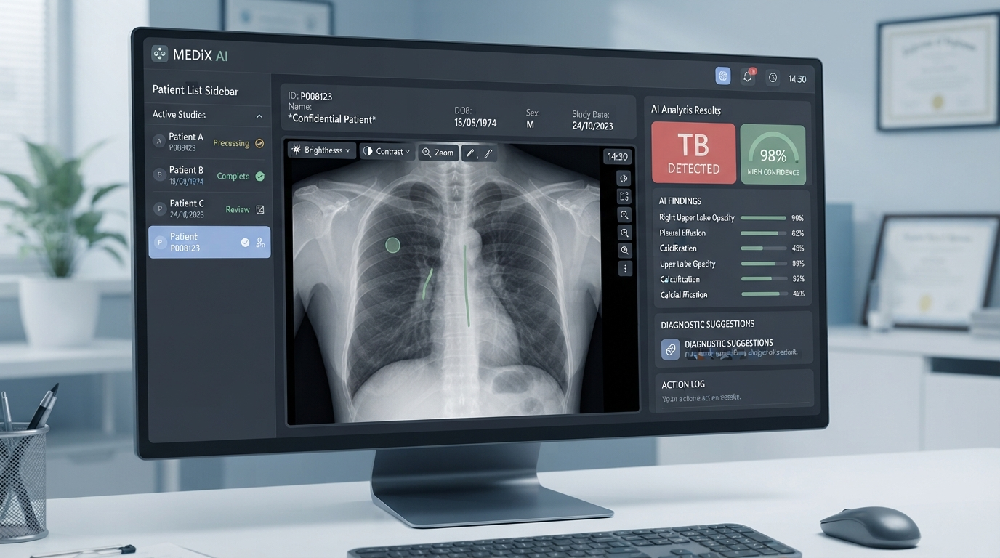

MediVision
MediVision is an AI-powered medical imaging platform. I led the backend and AI engineering, building Django REST APIs and a PyQt5 desktop application that runs machine-learning models for medical image processing and extracts TB labels from radiology images.

I built a backend service in Django exposing REST endpoints, plus a PyQt5 desktop client that loads the trained ML model, runs inference on device, and renders the original image alongside TB label bounding boxes. The API stores results in PostgreSQL and surfaces them to authorized clinicians, with strict PHI handling and no raw image transmission over the public internet.
Backend Architecture
The backend is a Django project exposing a REST API built with Django REST Framework. Authentication uses JWT, and images are served through signed, expiring URLs so they never sit in a publicly cacheable path. PostgreSQL stores patient metadata, study records and extracted TB labels; heavy model artifacts live outside the repo in an S3-compatible store.
AI / ML Inference
A PyTorch model processes chest radiographs and emits TB label bounding boxes plus confidence scores. To respect PHI and unreliable connectivity, inference runs inside a PyQt5 desktop application deployed on-prem at the hospital; the desktop client syncs de-identified results to the backend when on the local network.
Desktop Client (PyQt5)
The PyQt5 client loads DICOM and JPEG studies, renders the model output overlay, and lets clinicians confirm or correct TB labels before persisting them. A small status bar shows inference progress and confidence so reviewers can triage uncertain cases first.
Challenge
Radiologists were manually reviewing large volumes of chest X-rays to screen for tuberculosis (TB). The process was slow, prone to fatigue and inconsistent labeling, and the existing tooling had no structured way to extract TB labels for downstream epidemiology.
Outcome
Radiology review time per case dropped, and TB label extraction became reproducible and auditable. The system is in pilot use by a regional referral hospital in Addis Ababa, supporting both offline (on-device) and connected modes.